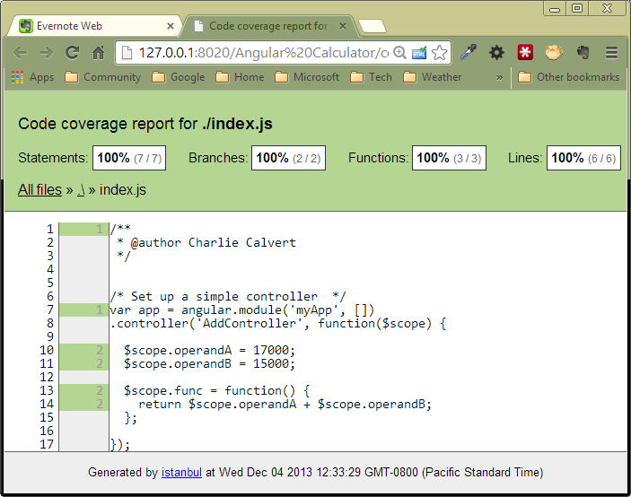

We can tell we are creating the module because we include the (empty) list of dependencies as a second parameter. These are the square brackets.
When draw-machine.js loads, it uses the loaded module:
angular.module('elvenApp')
We can tell we are using, rather than creating, the module because it has no second paramter.
For obvious reasons, we have to load index.js first since it creates the module that is used in draw-machine.js. We can't use the module until we have created it, therefore we need to load the file that creates the module first. We need to create (instantiate) the module before we can use it.
CheckList
The following items need to be completed to create a "Hello World" with
HTML and JavaScript controller.
In HTML or Jade
ng-app="elvenApp"
ng-controller
In JavaScript
Declare module, don't forget dependencies
Those are the steps. Now lets show the code.
In HTML or Jade:
body(ng-app="elvenApp")
#myController(ng-controller="MyController as myController")
p {{myController.foo}}
In JavaScript using ControllerAs:
var app = angular.module('elvenApp', []);
app.controller('MyController', function($scope) {
var myController = this;
myController.foo = 'Bar';
});
DOM Manipulation
The general rule is fairly simple:
Let Angular manipulate the DOM
If you must manipulate the DOM, do it in a directive
Directives allow you to enrich the HTML language. Some people are designers, and others are developers. If you are developer, you can create directives. If you are designer, you can consume or use directives.
A developer can expand the richness of HTML. By creating a new directive, you can make HTML more expressive. Simply add a new tag to your HTML template, and that page will now have a new ability. For instance, you could add a single tag to a page and thereby give it the ability to edit standard address records, or track hits on the page.
This directive assumes there is a variable app that references a module. In other words, it assumes that somewhere there is code that looks something like this:
var app = angular.module('foo', []);
After linking in the above directive, you can log the word bar to the console by adding this to your HTML:
This would also work:
Suppose your controller had this declaration in it:
To consume the directive, the designer could use either of the options demonstrated here in an HTML template:
The result would be output that displayed the firstName, lastName and city for Marie Curie.
Here is another way to think about this whole process. HTML is a declarative language. It states what you want to do, not how you want to do it. By putting the how in directives, you can minimize the complexity of your code. You are pushed toward the pit of success. You are encouraged to write declarative code that has few or no dependencies.
Scope
The scope in Angular is a means of working with the templates in our HTML. If we were using jQuery, we might write code like this in a Controller to update and track code in an input control:
$('#foo').val('bar');
var userInput = $('#foo').val(); // Yields string bar
In the simplest, most reductive possible terms, that is what scope does for you. In Angular html templates we write something that might include this code:
In our Angular controllers, we write:
$scope.foo = 'bar'
This is another way of writing the first jquery statement shown above. Here is a way to write the second:
var userInput = $scope.foo;
Now lets talk about buttons and clicks.
In jQuery we write:
$('#myButton').click(function() {});
In Angular we write something like this in the HTML:
As you can see, we are calling several function that are located in our factory. For instance, we are calling getDescription and getNine.
Here are the implementations for the factories:
angular.module('tools', [])
.factory('boat', function() { 'use strict';
this.Boat = (function() {
var description = "I'm a boat.";
function Boat() {
}
Boat.prototype.getDescription = function() {
return description;
};
return Boat;
})();
return new this.Boat();
})
.factory('sailboat', function() { 'use strict';
this.SailBoat = (function() {
var description = "I'm a sailboat";
function SailBoat() {
}
SailBoat.prototype.getNine = function() {
return 9;
};
SailBoat.prototype.getDescription = function() {
return description;
};
return SailBoat;
})();
return new this.SailBoat();
});
All that was really needed to make this work was:
1) Factory code that compiled and was well formed.
2) Controller code that used the tools module, and that injected instances of the objects found in the tools mod:
Once we have included the tools module, then we can easily inject the two factories called boat and sailboat. Now we can call methods on those objects:
One important part of any REST based web application is sending data from the client to the server and responding to that data. Let's consider an Angular program that uses:
HTML, CSS, and JavaScript on the client.
Node and Express on the server
MongoDb in the database
In particular, we send queries:
From the browser
To our express program
And from our express program
To a database
Then a response is sent back
From the database
To the express program
From the express program, back to our client side browser.
To better understand that process, let's look at code that allows user to add comments on a particular subject. In particular, we want to add a new comment to an array of comments. This array is a property of a larger object called a scientist.
A scientist has fields such as firstName, lastName and comments
The comments are an array of objects containing the text of the comment and the date when the comment was made.
We want to look at a method called newComment which is part of a larger object called mongoFactory. We will look only at the newComment method and ignore the rest of the factory.
newComment takes two parameters, the text for a comment, and a scientist object to which the comment will be appended:
This method takes the scientist and comment and sends them to the server. The server combines this information into a single scientist object and sends it to the database for storage. A confirmation response is then relayed back to the client.
But let's stay on the client side for now.
The key lines in this client side code are found here:
Here we see how to create a single object called payload that contains two properties each of which are themselves objects. We want to send the payload object from the client to the server. We use the angular $http.post method to send the information.
NOTE: The $http.post method and the jQuery $.ajax method are very similar. The big difference is that $http.post knows how to handle two way binding in angular.
Here is a deeper look at the payload object. It has two properties:
var payLoad = {
scientist: scientist, // A scientist with a firstName, lastName, etc...
comment: comment // A comment about the scientist with date and text
};
More specifically, the scientist object looks like this:
var newScientist = new scientists({
"firstName": scientist.firstName,
"lastName": scientist.lastName,
"subject": scientist.subject,
"subjects": scientist.subjects,
"comments": scientist.comments
});
The comment like this:
var comment = {
commentText: text,
date: new Date().toJSON().slice(0, 10)
};
As you can see, we are passing a reasonable amount of data back to the server. How is this accomplished? The $http.post method built into angular takes two parameters:
The uri designating the route for our code: '/newComment'.
The data we want to send to the server. In this case the payload object.
In addition, the $http.post method provides two callbacks, one for success, and one for failure. They handle the results of the request. I'm not going to say anything more about those methods at this point, as the code in them should be easy enough to understand.
The call to $http.post causes information to be sent from the browser to the server. The call is sent using the HTTP protocol. This is the protocol that drives the web, and it is primary means of transporting information between machines in REST based programs.
Here is the node express code on the server side that receives our payload object sent by the call to $http.post:
First we check to be sure we are connected to our mongodb database. The next order of business is to ensure that we can parse the payload sent by the client. That object is found in the built-in body property of the express request object:
console.log(request.body);
var scientist = request.body.scientist;
var comment = request.body.comment;
This code first sends some debug information to the console to help us confirm that all is working as expected. Then we parse out the scientist and comment objects sent from the client.
Next we find the existing record in the database to which we want to append the comment:
NOTE: It appears that we are only using the _id field of the scientist object, so it probably would have been possible to send that field alone, rather than the whole scientist object.
Once we have found our scientist, we add our comment to its collection:
scientist.comments.push(comment);
Then we send the updated scientist back to the database:
The call to response.send relays the response from the database back to the client where it is handled by the success callback mentioned earlier.
To review, we send our payload data:
From the client (the browser)
To the server (our express program)
To the database (mongodb on mongolab in our case)
Then confirmation messages are sent back
From mongodb to the server
From the server to the client
And so on, endlessly, across the entire web, call by call, program by program, millions of such calls are going across the internet every day, driving our economy, enhancing our social lives, communicating knowledge and information. Understanding this process is crucial to your understanding of web development. These kinds of operations are the very essence of a REST based application.
Or a more forigiving match for floating point numbers:
it("1.799 is close to 1.8", function() {
expect(1.799).toBeCloseTo(1.8);
});
Here are some of the more important Jasmine matchers and a hopefully
reasonable effort to define what they do:
toBe: This is very precise, like using ===.
toBeDefined: Is it not undefined
toBeCloseTo: Compare two floating point numbers.
toBeFalsy: Is it false, an empty string, null, undefined, etc
toBeGreaterThan: Is one number larger than another number
toBeLessThan: Is one number less than another
toBeNull: Test for null
toBeUndefined: Is the value "undefined".
toBeTruthy: Is it true or something equivalent.
toContain: Search an array for a value
toEqual: Less precise than toBe, like using == rather than ===
toMatch: Compare strings with regular expressions
toThrow: Does an expression throw an exception?
Use toThrow Matcher
Sometimes you want to prove that trying to do some particular action
will raise an exception. Jasmine has the toThrow matcher to
handle these cases. When calling toThrow there is a bit of a gotcha.
To get over this hurdle, you have to use a an anonymous function, as
shown below.
Consider this example. We have a method called tryToCallNew which is
set up to always thrown an exception. To use toThrow we must create
an anonymous function, call createError and test if it returns the
error we expect:
function createError() {
try {
throw new Error("Intentional error");
} catch(e) {
throw new Error('error');
}
}
it("throws an exception", function() {
expect(function() { tryToCallNew(); }).toThrow(new Error('error'));
});
Even though the method created throws an error, our test passes.
Let's do the same thing, but cause the error a different way:
var objectMethod = {
a: 1
};
function tryToCallNew() {
try {
new objectMethod();
} catch(e) {
throw new Error('error');
}
}
it("cannot be used with new", function() {
expect(function() { tryToCallNew(); }).toThrow(new Error('error'));
});
You can't call new on object like the one we created. So our attempt
to do so raises an error. But our test passes because it expects the
attempt to raise the error.
Here is another example of how to use toThrow. In this case, we
assume that calling new objectMethod() raises a TypeError because
objectMethod is not a function:
it("cannot be used with new", function() {
expect(function() { new objectMethod(); }).toThrow(new TypeError('object is not a function'));
});
Unit Test Names
I'm belatedly realizing that we can establish better naming
conventions in our unit tests.
We don't seem to be using this variable:
var pc = null;
...
pc = $controller('MileController', { $scope: npcController });
This code mocks our event service by simply returning true rather than
actually send the message. This line looks as though it is retreiving
a real gameEventService object, but it just using our mock:
In JsObjects on GitHub, there are several starter project for
working with Angular, MongoDb, Karma, Jasmine and Grunt. These
projects are quite useful as they will help you get over the fussy
coding required to get all your tools in place.
If you use these projects a few times, you should soon reach the
state where you can pull one down, and start Grunt JsHint, and Karma
continual testing in less than a minute. The projects ship with
sample unit tests, but you might even be able to add your first new
unit test in that time. They provide a great jump start for people
who have a moderate knowledge of how to create and test projects using
Angular, Jasmine, Karma and Grunt with JsHint.
Elf Ruble and Angular
There is an add on (a Ruble) for Aptana that will allow you to create
Elven Angular Projects and other things. See the ReadMe for details:
There is a second way to get the projects that are stored in the Elf
Ruble. This sections describes how to pull them directly from GitHub.
You can use the projects described above via the File | New Web Site
command in Aptana Studio. When used that way, they act as new
Project Templates that extend the power of Aptana by allowing you
automatically create projects that support Angular, Jasmine, Karam,
Grunt and JsHint.
If you have not done so already, open up the HTML bundle in Aptana.
There are two possible ways to do this. Pick the one that works on
your system.
Commands | HTML | Edit this Bundle
Commands | Other | HTML | Edit this Bundle
It may take a moment, but eventually you should see a new folder
called HTML in your workspace.
Open the templates directory and find the file called
project_templates.rb. Paste the code shown below into the bottom
of it. Please note the line feed after the final end. That is needed
or the IDE will complain.
Restart Aptana. Select File | New | Web Project. Select the
project called Elvenware Angular Unit Test Project. Create the
project as usually, filling in the name of the project. Run the
two HTML files and confirm that they work.
Note that the template for the project is stored on GitHub, so you
have to be connected for this to work. That's a drawback, but there
are obvious benefits to pulling from a repository that I can easily
update.
Since this project was pulled from GitHub, it includes a .git
folder. You should consider removing this folder if you do not want
to use git, or if this folder is embedded inside another git
repository.
After you have restarted Aptana, you can use these Project templates
to create new projects.
If you have some basic knowledge of Grunt and Karma, then you can
use these tools with these projects. To get started, run npm
install in the root directory for the project:
npm install
Next, start Karma by typing karma start:
karma start
Periodically, you should go to the command line in the root directory
for this folder and run grunt jshint.
grunt jshint
You should then examine the result.xml file to look for any problems
in your code.
Also, read the README.md files for these projects.
Instructions for the Angular Three Assignment
With thanks to Margie Calvert for helping to assemble this information.
This exercise creates a very simple function inside an angular
module, then hooks it up appropriately with a controller, a unit
test, and an index page. It uses Charlie's Aptana Ruble to get
started.
Use the Elvenware Angular Jasmine Karma project. This contains the
necessary files to run Karma on the code you generate, as you
generate it.
After you install the project in Aptana, set up the following files.
###FourModule.js file
Use a new JavaScript Template (File -> New From Template -> JavaScript -> JavaScript Template)
to create a blank javascript page. Call it FourModule.js and save it
in the Source directory of your project.
Add 'Source/FourModule.js' to the list. I already added a few other modules, so your list will look
different.
###Main.js
Add the module into the list in the brackets. Any time you add a module,
add the name here. The first line will look something like this before you change anything.
In my code, I already added quite a few modules, which you will not
have. Don't forget to put the name of your module in quotes and
don't forget to use a comma to separate any modules in the brackets.
Now try running index.html. It should show the results of your work.
Using Karma
Karma is a wrapper around unit testing frameworks. It helps automate
the way we run our tests. It is commonly used with AngularJs. It
once had a name so absurd that I refuse to repeat it here. The name
change is fairly recent, so you may find references to the old name
here and there.
To install Karma:
npm install -g karma
Test from command line to see if it is installed:
>karma --version
Karma version: 0.10.2
In the command terminal in Aptana, navigate to the directory where you have your project.
You will be starting in your Users/myName directory. So if the project is in the isit320
directory, you might have to cd to Documents/isit320/currentprojectfolder.
run
npm install
and then type
karma start
###Coverage
Code coverage let's you know what code in your program is not covered
by unit tests.
First install coverage tool, which is called Istanbul:
npm install -g istanbul
In some cases, you may already have a package.json that includes
karma-coverage, so just rerun npm install. However, of other projects,
you can install coverage and save a reference for it in your package.json
file by typing the following:
npm install karma-coverage --save-dev
When you are done, you can open up package.json and find the entry
for karma-coverage.
Then you need to modify three parts of karma.conf.js:
When defining your coverage support, remember that it is up to you
to tell coverage where the files are that are being tested. You
don't have to point to the test files, just the files that are being
tested. For most of our programs, that means doing something like
this in the preprocessors statement:
'Source/\*\*/\*.js'
When you get it right, you should see Coverage produce an HTML file
for each JavaScript file in your Source directory.
Add on support for your reports:
reporters: ['progress', 'coverage', 'junit'],
And in your plugins at the bottom of karam.conf.js and in karam-coverage:
The results end up in a folder called coverage in a series of
HTML files. Open the files in your browser.

Grunt
You can also use Grunt to run jshint.
grunt jshint
Mocking Objects with $httpBackend
In this section we see if our program knows how to handle the data sent from the server. We never actually call the server. Instead, we simulate, or mock, the kind of data the server would send. We then see if our program handles it correctly. Our test, therefore, is not of the server itself, rather, it is a test of how our program handles the data once it gets it.
This concept is so important, that I'm going to state it again in a slightly different way. Unit tests with $httpBackend allow us to write mock tests that confirm that a particular method properly handles the type of data that might be returned from a server. This process does not test if the server is working correctly. Instead, it tests whether our program can handle the data the server will send when it is working correctly.
It is, of course, still important to test if your server is working correctly. It is just that a unit test is not the right place to make such a confirmation. To test if the server is working correctly, you should write an integration test or end to end test, not a unit test. For completeness sake, you need not only create and run unit tests, but also end to end and integration tests. But as developers, we are most interested in unit tests.
Most testing frameworks provide a means of handling mock objects. The implementation of mock objects found in $httpBackend is simply Jasmine's way of performing this common task. The most important thing to do is understand the concept behind these kinds of test. Once you understand that concept, then it should be relatively easy to understand any one implementation.
NOTE: I would say that understanding this kind of unit test and why it is helpful took me longer to grasp than almost any other concept in programming. Part of the problem is that there traditionally has not been much good information on this subject in the JavaScript community. However, the tide is turning. Now that a few leaders have clearly explained this concept, I'm starting to see more and more reasonable explanations of why mocking data sent from a server is useful to developers. It is not that hard to understand once you get over a few preliminary hurdles. I will, add, however, that this is one of those subjects you don't want to understand too quickly. I, at any rate, found that I thought I understood it well before I actually started to understand it. There are many subtleties in this relatively arcane art, so I'm sure I will be learning more about mocking and testing data for years. That is one of the reasons the subject is so interesting, and so challenging.
NOTE: Don't forget that there is a wealth of information on unit testing in other languages available in book form. Certainly one key book is Kent Beck's Test Driven Development. Other important books include Clean Code by Uncle Bob Martin and Refactoring by Martin Fowler.
Here is a stripped down example of using $httpBackend in a JavaScript program:
Calls to expectGET or whenGET give you a chance to mock up the data that a real call to the server might produce.
Then we call the function that actually performs the action we want to test:
myController.loadJson
Finally, we call flush in order to simulate the reply returning from the server with our requested data. At that point, we are ready to see if the data sent back is what we expected.
More examples are found on JsObjects. For instance, here are some mocking Mongo Data examples: